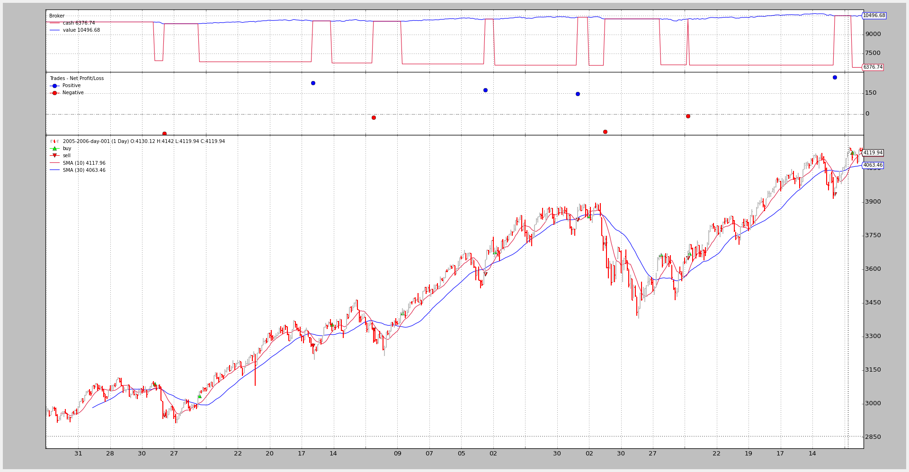

Automating backtrader BackTesting¶
Updated on Aug 22, 2015
Analyzer support in bt-run.py included
So far all backtrader examples and working samples have started from scratch
creating a main Python module which loads datas, strategies, observers and
prepares cash and commission schemes.
One of the goals of algorithmic trading is the automation of trading and given that bactrader is a backtesting platform intented to check trading algorithms (hence is an algotrading platform), automating the use of backtrader was an obvious goal.
The development version of backtrader now contains the bt-run.py script
which automates most tasks and will be installed along backtrader as part of
a regular package.
bt-run.py allows the end user to:
- Say which datas have to be loaded
- Set the format to load the datas
- Specify the date range for the datas
- Disable standard observers
- Load one or more observers (example: DrawDown) from the built-in ones or from a python module
- Set the cash and commission scheme parameters for the broker (commission, margin, mult)
- Enable plotting, controlling the amount of charts and style to present the data
And finally:
- Load a strategy (a built-in one or from a Python module)
- Pass parameters to the loaded strategy
See below for the Usage* of the script.
Applying a User Defined Strategy¶
Let’s consider the following strategy which:
- Simply loads a SimpleMovingAverage (default period 15)
- Prints outs
- Is in a fily with the name mymod.py
from __future__ import (absolute_import, division, print_function,
unicode_literals)
import backtrader as bt
import backtrader.indicators as btind
class MyTest(bt.Strategy):
params = (('period', 15),)
def log(self, txt, dt=None):
''' Logging function fot this strategy'''
dt = dt or self.data.datetime[0]
if isinstance(dt, float):
dt = bt.num2date(dt)
print('%s, %s' % (dt.isoformat(), txt))
def __init__(self):
sma = btind.SMA(period=self.p.period)
def next(self):
ltxt = '%d, %.2f, %.2f, %.2f, %.2f, %.2f, %.2f'
self.log(ltxt %
(len(self),
self.data.open[0], self.data.high[0],
self.data.low[0], self.data.close[0],
self.data.volume[0], self.data.openinterest[0]))
Executing the strategy with the usual testing sample is easy: easy:
./bt-run.py --csvformat btcsv \
--data ../samples/data/sample/2006-day-001.txt \
--strategy ./mymod.py
The chart output

The console output:
2006-01-20T23:59:59+00:00, 15, 3593.16, 3612.37, 3550.80, 3550.80, 0.00, 0.00
2006-01-23T23:59:59+00:00, 16, 3550.24, 3550.24, 3515.07, 3544.31, 0.00, 0.00
2006-01-24T23:59:59+00:00, 17, 3544.78, 3553.16, 3526.37, 3532.68, 0.00, 0.00
2006-01-25T23:59:59+00:00, 18, 3532.72, 3578.00, 3532.72, 3578.00, 0.00, 0.00
...
...
2006-12-22T23:59:59+00:00, 252, 4109.86, 4109.86, 4072.62, 4073.50, 0.00, 0.00
2006-12-27T23:59:59+00:00, 253, 4079.70, 4134.86, 4079.70, 4134.86, 0.00, 0.00
2006-12-28T23:59:59+00:00, 254, 4137.44, 4142.06, 4125.14, 4130.66, 0.00, 0.00
2006-12-29T23:59:59+00:00, 255, 4130.12, 4142.01, 4119.94, 4119.94, 0.00, 0.00
Same strategy but:
- Setting the parameter
periodto 50
The command line:
./bt-run.py --csvformat btcsv \
--data ../samples/data/sample/2006-day-001.txt \
--strategy ./mymod.py \
period 50
The chart output.
Using a built-in Strategy¶
backtrader will slowly be including sample (textbook) strategies. Along with
the bt-run.py script a standard Simple Moving Average CrossOver strategy
is included. The name:
SMA_CrossOver- Parameters
- fast (default 10) period of the fast moving average
- slow (default 30) period of the slow moving average
The strategy buys if the fast moving average crosses up the fast and sells (only if it has bought before) upon the fast moving average crossing down the slow moving average.
The code
from __future__ import (absolute_import, division, print_function,
unicode_literals)
import backtrader as bt
import backtrader.indicators as btind
class SMA_CrossOver(bt.Strategy):
params = (('fast', 10), ('slow', 30))
def __init__(self):
sma_fast = btind.SMA(period=self.p.fast)
sma_slow = btind.SMA(period=self.p.slow)
self.buysig = btind.CrossOver(sma_fast, sma_slow)
def next(self):
if self.position.size:
if self.buysig < 0:
self.sell()
elif self.buysig > 0:
self.buy()
Standard execution:
./bt-run.py --csvformat btcsv \
--data ../samples/data/sample/2006-day-001.txt \
--strategy :SMA_CrossOver
Notice the ‘:’. The standard notation (see below) to load a strategy is:
- module:stragegy
With the following rules:
- If module is there and strategy is specified, then that strategy will be used
- If module is there but no strategy is specified, the 1st strategy found in the module will be returned
- If no module is specified, “strategy” is assumed to refer to a strategy in the
backtraderpackage
The latter being our case.
The output.

One last example adding commission schemes, cash and changing the parameters:
./bt-run.py --csvformat btcsv \
--data ../samples/data/sample/2006-day-001.txt \
--cash 20000 \
--commission 2.0 \
--mult 10 \
--margin 2000 \
--strategy :SMA_CrossOver \
fast 5 slow 20
The output.

We have backtested the strategy:
Changing the moving average periods
Setting a new starting cash
Putting a commission scheme in place for a futures-like instrument
See the continuous variations in cash with each bar, as cash is adjusted for the futures-like instrument daily changes
Adding Analyzers¶
Updated on Aug 22, 2015
Added Analyzer example
bt-run.py also supports adding Analyzers with the same syntax used for
the strategies to choose between internal/external analyzers.
Example with a SharpeRatio analysis for the years 2005-2006:
./bt-run.py --csvformat btcsv \
--data ../samples/data/sample/2005-2006-day-001.txt \
--strategy :SMA_CrossOver \
--analyzer :SharpeRatio
The output:
====================
== Analyzers
====================
## sharperatio
-- sharperatio : 11.6473326097
Good strategy!!! (Pure luck for the example actually which also bears no commissions)
The chart (which simply shows the Analyzer is not in the plot, because Analyzers cannot be plotted, they aren’t lines objects)
Usage of the script¶
Directly from the script:
$ ./bt-run.py --help
usage: bt-run.py [-h] --data DATA
[--csvformat {yahoocsv_unreversed,vchart,sierracsv,yahoocsv,vchartcsv,btcsv}]
[--fromdate FROMDATE] [--todate TODATE] --strategy STRATEGY
[--nostdstats] [--observer OBSERVERS] [--analyzer ANALYZERS]
[--cash CASH] [--commission COMMISSION] [--margin MARGIN]
[--mult MULT] [--noplot] [--plotstyle {bar,line,candle}]
[--plotfigs PLOTFIGS]
...
Backtrader Run Script
positional arguments:
args args to pass to the loaded strategy
optional arguments:
-h, --help show this help message and exit
Data options:
--data DATA, -d DATA Data files to be added to the system
--csvformat {yahoocsv_unreversed,vchart,sierracsv,yahoocsv,vchartcsv,btcsv}, -c {yahoocsv_unreversed,vchart,sierracsv,yahoocsv,vchartcsv,btcsv}
CSV Format
--fromdate FROMDATE, -f FROMDATE
Starting date in YYYY-MM-DD[THH:MM:SS] format
--todate TODATE, -t TODATE
Ending date in YYYY-MM-DD[THH:MM:SS] format
Strategy options:
--strategy STRATEGY, -st STRATEGY
Module and strategy to load with format
module_path:strategy_name. module_path:strategy_name
will load strategy_name from the given module_path
module_path will load the module and return the first
available strategy in the module :strategy_name will
load the given strategy from the set of built-in
strategies
Observers and statistics:
--nostdstats Disable the standard statistics observers
--observer OBSERVERS, -ob OBSERVERS
This option can be specified multiple times Module and
observer to load with format
module_path:observer_name. module_path:observer_name
will load observer_name from the given module_path
module_path will load the module and return all
available observers in the module :observer_name will
load the given strategy from the set of built-in
strategies
Analyzers:
--analyzer ANALYZERS, -an ANALYZERS
This option can be specified multiple times Module and
analyzer to load with format
module_path:analzyer_name. module_path:analyzer_name
will load observer_name from the given module_path
module_path will load the module and return all
available analyzers in the module :anaylzer_name will
load the given strategy from the set of built-in
strategies
Cash and Commission Scheme Args:
--cash CASH, -cash CASH
Cash to set to the broker
--commission COMMISSION, -comm COMMISSION
Commission value to set
--margin MARGIN, -marg MARGIN
Margin type to set
--mult MULT, -mul MULT
Multiplier to use
Plotting options:
--noplot, -np Do not plot the read data
--plotstyle {bar,line,candle}, -ps {bar,line,candle}
Plot style for the input data
--plotfigs PLOTFIGS, -pn PLOTFIGS
Plot using n figures
And the code:
from __future__ import (absolute_import, division, print_function,
unicode_literals)
import argparse
import datetime
import inspect
import itertools
import random
import string
import sys
import backtrader as bt
import backtrader.feeds as btfeeds
import backtrader.indicators as btinds
import backtrader.observers as btobs
import backtrader.strategies as btstrats
import backtrader.analyzers as btanalyzers
DATAFORMATS = dict(
btcsv=btfeeds.BacktraderCSVData,
vchartcsv=btfeeds.VChartCSVData,
vchart=btfeeds.VChartData,
sierracsv=btfeeds.SierraChartCSVData,
yahoocsv=btfeeds.YahooFinanceCSVData,
yahoocsv_unreversed=btfeeds.YahooFinanceCSVData
)
def runstrat():
args = parse_args()
stdstats = not args.nostdstats
cerebro = bt.Cerebro(stdstats=stdstats)
for data in getdatas(args):
cerebro.adddata(data)
# Prepare a dictionary of extra args passed to push them to the strategy
# pack them in pairs
packedargs = itertools.izip_longest(*[iter(args.args)] * 2, fillvalue='')
# prepare a string for evaluation, eval and store the result
evalargs = 'dict('
for key, value in packedargs:
evalargs += key + '=' + value + ','
evalargs += ')'
stratkwargs = eval(evalargs)
# Get the strategy and add it with any arguments
strat = getstrategy(args)
cerebro.addstrategy(strat, **stratkwargs)
obs = getobservers(args)
for ob in obs:
cerebro.addobserver(ob)
ans = getanalyzers(args)
for an in ans:
cerebro.addanalyzer(an)
setbroker(args, cerebro)
runsts = cerebro.run()
runst = runsts[0] # single strategy and no optimization
if runst.analyzers:
print('====================')
print('== Analyzers')
print('====================')
for name, analyzer in runst.analyzers.getitems():
print('## ', name)
analysis = analyzer.get_analysis()
for key, val in analysis.items():
print('-- ', key, ':', val)
if not args.noplot:
cerebro.plot(numfigs=args.plotfigs, style=args.plotstyle)
def setbroker(args, cerebro):
broker = cerebro.getbroker()
if args.cash is not None:
broker.setcash(args.cash)
commkwargs = dict()
if args.commission is not None:
commkwargs['commission'] = args.commission
if args.margin is not None:
commkwargs['margin'] = args.margin
if args.mult is not None:
commkwargs['mult'] = args.mult
if commkwargs:
broker.setcommission(**commkwargs)
def getdatas(args):
# Get the data feed class from the global dictionary
dfcls = DATAFORMATS[args.csvformat]
# Prepare some args
dfkwargs = dict()
if args.csvformat == 'yahoo_unreversed':
dfkwargs['reverse'] = True
fmtstr = '%Y-%m-%d'
if args.fromdate:
dtsplit = args.fromdate.split('T')
if len(dtsplit) > 1:
fmtstr += 'T%H:%M:%S'
fromdate = datetime.datetime.strptime(args.fromdate, fmtstr)
dfkwargs['fromdate'] = fromdate
fmtstr = '%Y-%m-%d'
if args.todate:
dtsplit = args.todate.split('T')
if len(dtsplit) > 1:
fmtstr += 'T%H:%M:%S'
todate = datetime.datetime.strptime(args.todate, fmtstr)
dfkwargs['todate'] = todate
datas = list()
for dname in args.data:
dfkwargs['dataname'] = dname
data = dfcls(**dfkwargs)
datas.append(data)
return datas
def getmodclasses(mod, clstype, clsname=None):
clsmembers = inspect.getmembers(mod, inspect.isclass)
clslist = list()
for name, cls in clsmembers:
if not issubclass(cls, clstype):
continue
if clsname:
if clsname == name:
clslist.append(cls)
break
else:
clslist.append(cls)
return clslist
def loadmodule(modpath, modname=''):
# generate a random name for the module
if not modname:
chars = string.ascii_uppercase + string.digits
modname = ''.join(random.choice(chars) for _ in range(10))
version = (sys.version_info[0], sys.version_info[1])
if version < (3, 3):
mod, e = loadmodule2(modpath, modname)
else:
mod, e = loadmodule3(modpath, modname)
return mod, e
def loadmodule2(modpath, modname):
import imp
try:
mod = imp.load_source(modname, modpath)
except Exception, e:
return (None, e)
return (mod, None)
def loadmodule3(modpath, modname):
import importlib.machinery
try:
loader = importlib.machinery.SourceFileLoader(modname, modpath)
mod = loader.load_module()
except Exception, e:
return (None, e)
return (mod, None)
def getstrategy(args):
sttokens = args.strategy.split(':')
if len(sttokens) == 1:
modpath = sttokens[0]
stname = None
else:
modpath, stname = sttokens
if modpath:
mod, e = loadmodule(modpath)
if not mod:
print('')
print('Failed to load module %s:' % modpath, e)
sys.exit(1)
else:
mod = btstrats
strats = getmodclasses(mod=mod, clstype=bt.Strategy, clsname=stname)
if not strats:
print('No strategy %s / module %s' % (str(stname), modpath))
sys.exit(1)
return strats[0]
def getanalyzers(args):
analyzers = list()
for anspec in args.analyzers or []:
tokens = anspec.split(':')
if len(tokens) == 1:
modpath = tokens[0]
name = None
else:
modpath, name = tokens
if modpath:
mod, e = loadmodule(modpath)
if not mod:
print('')
print('Failed to load module %s:' % modpath, e)
sys.exit(1)
else:
mod = btanalyzers
loaded = getmodclasses(mod=mod, clstype=bt.Analyzer, clsname=name)
if not loaded:
print('No analyzer %s / module %s' % ((str(name), modpath)))
sys.exit(1)
analyzers.extend(loaded)
return analyzers
def getobservers(args):
observers = list()
for obspec in args.observers or []:
tokens = obspec.split(':')
if len(tokens) == 1:
modpath = tokens[0]
name = None
else:
modpath, name = tokens
if modpath:
mod, e = loadmodule(modpath)
if not mod:
print('')
print('Failed to load module %s:' % modpath, e)
sys.exit(1)
else:
mod = btobs
loaded = getmodclasses(mod=mod, clstype=bt.Observer, clsname=name)
if not loaded:
print('No observer %s / module %s' % ((str(name), modpath)))
sys.exit(1)
observers.extend(loaded)
return observers
def parse_args():
parser = argparse.ArgumentParser(
description='Backtrader Run Script')
group = parser.add_argument_group(title='Data options')
# Data options
group.add_argument('--data', '-d', action='append', required=True,
help='Data files to be added to the system')
datakeys = list(DATAFORMATS.keys())
group.add_argument('--csvformat', '-c', required=False,
default='btcsv', choices=datakeys,
help='CSV Format')
group.add_argument('--fromdate', '-f', required=False, default=None,
help='Starting date in YYYY-MM-DD[THH:MM:SS] format')
group.add_argument('--todate', '-t', required=False, default=None,
help='Ending date in YYYY-MM-DD[THH:MM:SS] format')
# Module where to read the strategy from
group = parser.add_argument_group(title='Strategy options')
group.add_argument('--strategy', '-st', required=True,
help=('Module and strategy to load with format '
'module_path:strategy_name.\n'
'\n'
'module_path:strategy_name will load '
'strategy_name from the given module_path\n'
'\n'
'module_path will load the module and return '
'the first available strategy in the module\n'
'\n'
':strategy_name will load the given strategy '
'from the set of built-in strategies'))
# Observers
group = parser.add_argument_group(title='Observers and statistics')
group.add_argument('--nostdstats', action='store_true',
help='Disable the standard statistics observers')
group.add_argument('--observer', '-ob', dest='observers',
action='append', required=False,
help=('This option can be specified multiple times\n'
'\n'
'Module and observer to load with format '
'module_path:observer_name.\n'
'\n'
'module_path:observer_name will load '
'observer_name from the given module_path\n'
'\n'
'module_path will load the module and return '
'all available observers in the module\n'
'\n'
':observer_name will load the given strategy '
'from the set of built-in strategies'))
# Anaylzers
group = parser.add_argument_group(title='Analyzers')
group.add_argument('--analyzer', '-an', dest='analyzers',
action='append', required=False,
help=('This option can be specified multiple times\n'
'\n'
'Module and analyzer to load with format '
'module_path:analzyer_name.\n'
'\n'
'module_path:analyzer_name will load '
'observer_name from the given module_path\n'
'\n'
'module_path will load the module and return '
'all available analyzers in the module\n'
'\n'
':anaylzer_name will load the given strategy '
'from the set of built-in strategies'))
# Broker/Commissions
group = parser.add_argument_group(title='Cash and Commission Scheme Args')
group.add_argument('--cash', '-cash', required=False, type=float,
help='Cash to set to the broker')
group.add_argument('--commission', '-comm', required=False, type=float,
help='Commission value to set')
group.add_argument('--margin', '-marg', required=False, type=float,
help='Margin type to set')
group.add_argument('--mult', '-mul', required=False, type=float,
help='Multiplier to use')
# Plot options
group = parser.add_argument_group(title='Plotting options')
group.add_argument('--noplot', '-np', action='store_true', required=False,
help='Do not plot the read data')
group.add_argument('--plotstyle', '-ps', required=False, default='bar',
choices=['bar', 'line', 'candle'],
help='Plot style for the input data')
group.add_argument('--plotfigs', '-pn', required=False, default=1,
type=int, help='Plot using n figures')
# Extra arguments
parser.add_argument('args', nargs=argparse.REMAINDER,
help='args to pass to the loaded strategy')
return parser.parse_args()
if __name__ == '__main__':
runstrat()


{kind=link}
{kind=link}